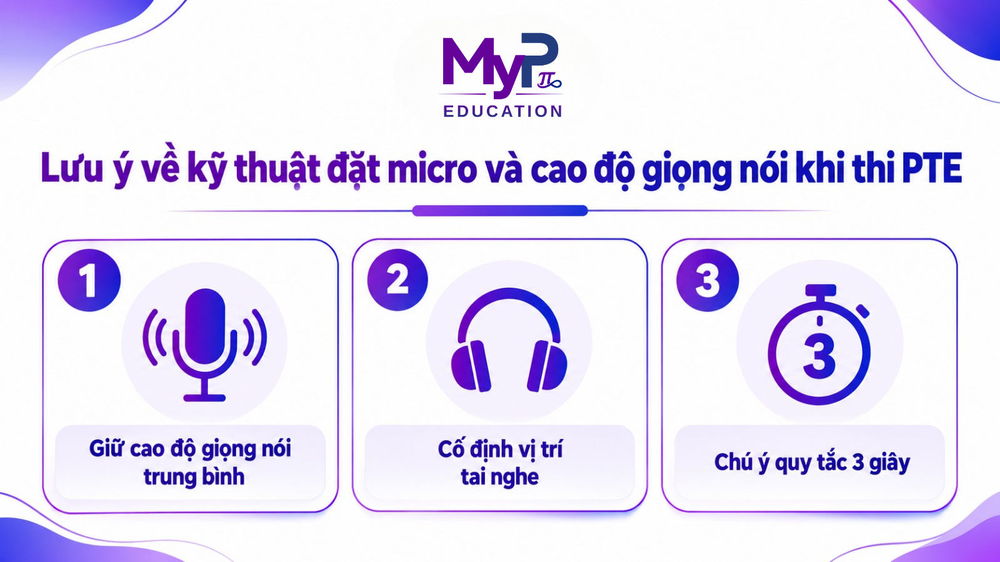

Trong bài thi PTE Academic, phần Speaking luôn là rào cản lớn với nhiều học viên. Nhiều người thường lo lắng vì giọng nói còn nặng tính vùng miền. Số khác lại cố ép bản thân phải nói giống hệt giọng Anh - Mỹ bản xứ.
Thực tế, hệ thống Pearson không yêu cầu bạn phải có giọng nói hoàn hảo. Máy tính chỉ đánh giá bài thi qua độ rõ ràng của âm tiết, trọng âm và nhịp điệu tự nhiên. Vì vậy, hiểu đúng tiêu chí chấm điểm sẽ giúp bạn tiết kiệm nhiều thời gian ôn luyện.
Bài viết này từ MyP Education sẽ phân tích kỹ tiêu chí Pronunciation trong bài thi. Đồng thời, chúng tôi gợi ý 6 phương pháp đơn giản giúp bạn cải thiện phát âm tiếng Anh PTE hiệu quả tại nhà.
Đánh giá tiêu chí Pronunciation PTE theo chuẩn thuật toán Pearson
Hiểu rõ cách hệ thống máy tính phân tích bài nói giúp bạn ôn luyện đúng hướng và tiết kiệm thời gian.
Bản chất tiêu chí phát âm trong bài thi PTE Speaking
Bài thi PTE thực hiện hoàn toàn trên máy tính thông qua thiết bị tai nghe tích hợp micro. Bản ghi âm bài nói được xử lý trực tiếp bởi hệ thống chấm điểm của Pearson.
Theo tài liệu PTE Academic Test Taker Score Guide, tiêu chí Pronunciation PTE chấm trên thang điểm 0–5 dựa vào độ dễ hiểu của bài nói. Hệ thống máy tính tập trung đánh giá 3 yếu tố cốt lõi:
- Rõ nguyên âm và phụ âm: Âm thanh phát ra đủ nét để máy nhận diện đúng từ vựng.
- Trọng âm từ và câu: Nhấn đúng âm tiết chính và các từ mang thông tin.
- Âm điệu tự nhiên: Lời nói mượt mà, không gượng ép hay ảnh hưởng quá nặng bởi giọng tiếng mẹ đẻ.
Chuẩn hóa kỹ năng phát âm tiếng Anh PTE ngay từ đầu giúp bạn tránh được các lỗi sai hệ thống khi làm bài thi thực tế.
Tác động của Pronunciation đến các dạng bài Speaking chính
Kỹ năng phát âm tiếng Anh PTE đóng vai trò quyết định đến kết quả của nhiều dạng bài thi kết hợp:
Dạng bài Speaking | Yêu cầu kỹ thuật phát âm tiếng Anh PTE | Tác động điểm số |
|---|---|---|
Read Aloud | Phát âm chuẩn từ vựng, ngắt cụm đúng cấu trúc ngữ pháp. | Tích điểm cho Speaking & Reading. |
Repeat Sentence | Đọc đúng nguyên âm, phụ âm và trọng âm câu theo audio gốc. | Tích điểm cho Speaking & Listening. |
Describe Image | Trình bày rõ ràng, không nuốt âm khi mô tả biểu đồ. | Tích điểm trực tiếp cho Speaking. |
Retell Lecture | Diễn đạt lại ý chính với ngữ điệu và trọng âm tự nhiên. | Tích điểm cho Speaking & Listening. |
Nắm vững kỹ thuật phát âm tiếng Anh PTE là chìa khóa để bảo vệ điểm số ở cả 3 kỹ năng Speaking, Reading và Listening.
6 Cách cải thiện phát âm tiếng Anh PTE giúp tối ưu điểm Speaking
Dưới đây là 6 cách cải thiện phát âm tiếng Anh PTE đơn giản, có tính ứng dụng cao hàng ngày:
Luyện tập nói với tai nghe đúng kỹ thuật ngay tại nhà
Khi tự học, bạn không nhất thiết phải mua thiết bị đắt tiền. Bạn có thể tận dụng tai nghe máy tính hoặc tai nghe điện thoại có dây sẵn có để luyện phát âm Speaking PTE:
- Chỉnh vị trí micro trên tai nghe: Đưa phần micro (trên dây hoặc cần tai nghe) cách mép môi 1–2 ngón tay và hơi lệch xuống dưới. Vị trí này giúp tránh tiếng thở đập thẳng vào đầu thu gây nhiễu âm.
- Nói với âm lượng giao tiếp chuẩn: Hãy giữ giọng nói rõ ràng, ổn định như khi phát biểu trong lớp học. Tránh nói quá nhỏ làm máy khó thu âm, hoặc gào quá to gây vỡ tiếng khi ghi âm trên laptop.
Cài đặt thiết bị chuẩn xác giúp đảm bảo chất lượng âm thanh khi rèn luyện phát âm tiếng Anh PTE mỗi ngày.
Duy trì nhịp độ vừa phải và tốc độ nói ổn định
Nói quá nhanh không giúp bạn tăng điểm trôi chảy. Ép tốc độ chỉ làm bạn dễ nuốt âm đuôi và giảm điểm phát âm.
- Kiểm soát tốc độ: Duy trì nhịp nói đều đặn từ đầu đến cuối câu văn.
- Ngắt nghỉ đúng vị trí: Dừng hợp lý ở dấu câu hoặc ranh giới cụm từ. Tốc độ vừa phải giúp bài nói rõ ràng và dễ theo dõi hơn.
Khi bạn kiểm soát tốt tốc độ, việc phát âm tiếng Anh trong bài thi PTE sẽ chuẩn xác và tự nhiên hơn đáng kể.
Củng cố kỹ thuật phát âm nguyên âm và phụ âm chuẩn xác
Hệ thống cần nghe rõ từng âm tiết để nhận diện từ vựng. Bạn nên ưu tiên sửa các âm người Việt hay mắc lỗi:
- Phân biệt cặp âm khó: Luyện tập các cặp phụ âm dễ nhầm lẫn như /s/ - /ʃ/, /θ/ - /ð/, /p/ - /b/.
- Đọc rõ âm cuối (Ending Sounds): Giữ đầy đủ âm /t/, /d/, /s/, /z/ và các đuôi -ed, -s/-es.
- Ghép vào câu hoàn chỉnh: Khi sửa xong một âm đơn lẻ, hãy đọc cả câu chứa từ đó để tạo phản xạ nói tự nhiên.
Luyện tập âm tiết đúng phương pháp giúp nâng cao chỉ số phát âm tiếng Anh PTE bền vững.
Rèn luyện trọng âm từ và trọng âm câu
Trọng âm tạo nên nhịp điệu đặc trưng cho bài nói. Đặt trọng âm đúng giúp hệ thống máy tính nhận diện từ vựng nhanh hơn:
- Trọng âm từ: Nhấn đúng âm tiết chính trong từ nhiều âm tiết (ví dụ: pho'tograph → pho'tographer).
- Trọng âm câu: Nhấn vào từ mang thông tin chính (danh từ, động từ, tính từ) và lướt nhẹ từ chức năng (giới từ, mạo từ). Tránh đọc với lực nhấn đều đều bằng nhau.
Nắm vững quy tắc ngữ điệu là bước tiến quan trọng để làm chủ kỹ năng phát âm tiếng Anh PTE chuyên sâu
Áp dụng phương pháp Shadowing rèn phản xạ phát âm
Trong luyện phát âm tiếng Anh PTE, Shadowing là kỹ thuật nghe và nói nhại theo audio gốc với độ trễ 0.5 – 1 giây. Phương pháp này giúp duy trì phản xạ nói liên tục rất tốt:
- Chọn audio phù hợp: Chọn bài mẫu PTE có giọng đọc rõ ràng, tốc độ vừa phải.
- Nghe và phân tích: Nghe 1–2 lần kết hợp nhìn bản phiên âm (transcript) để bắt nhịp ngắt nghỉ.
- Nói đuổi theo bài mẫu: Bật audio và nói theo ngay lập tức. Tập trung nhại lại đúng ngữ điệu và trọng âm.
- Bỏ dần transcript: Khi đã quen, tắt bản phiên âm và chỉ tập trung phản xạ theo âm thanh thu được.
Ứng dụng đều đặn phương pháp Shadowing PTE sẽ giúp bạn cải thiện cơ miệng và nhịp điệu bài nói. Hãy dành khoảng 15–20 phút mỗi ngày để luyện tập, bạn sẽ thấy sự thay đổi rõ rệt trong phản xạ giao tiếp.
Thực hành ghi âm và tự đánh giá qua dữ liệu bài nói
Luyện phát âm tiếng Anh PTE mà không kiểm tra lại rất dễ lặp lại các lỗi sai cũ. Dưới đây là quy trình ghi âm đơn giản mà có thể tham khảo áp dụng:
- Ghi âm bài đọc: Trả lời câu hỏi trong không gian yên tĩnh.
- Nghe lại và nhặt lỗi: Phân tích bản ghi âm: Từ nào chưa rõ? Có bị mất âm cuối không? Có bị vấp hay ngập ngừng không?
- Sửa lại bài nói: Tập trung ghi âm lại lần 2 để khắc phục đúng lỗi vừa phát hiện.
Lưu ý về kỹ thuật đặt micro và cao độ giọng nói khi thi PTE

Thí sinh cần chú ý thêm vài yếu tố kỹ thuật để bản ghi âm bài thi phát âm tiếng Anh PTE đạt chất lượng tốt nhất:
- Giữ cao độ giọng nói trung bình: Giọng quá cao dễ gây nhiễu tần số trên thiết bị thu âm. Hãy giữ tông giọng tự nhiên, bình tĩnh để hơi thở ổn định.
- Cố định vị trí tai nghe: Sau khi hoàn thành kiểm tra thiết bị, tuyệt đối không chỉnh lại micro để tránh tạo tiếng va đập vật lý.
- Chú ý quy tắc 3 giây: Micro sẽ tự động đóng nếu bạn im lặng quá 3 giây. Hãy duy trì dòng nói liên tục để không bị đứt đoạn bài thi.
Hiểu rõ các quy tắc kỹ thuật này giúp bài thi phát âm tiếng Anh PTE của bạn được ghi nhận trọn vẹn.
Lời kết
Việc chuẩn hóa phát âm tiếng Anh PTE là quá trình rèn luyện độ rõ của âm tiết, trọng âm và nhịp điệu tự nhiên. Luyện tập đều đặn với micro và phương pháp Shadowing sẽ giúp bạn tự tin làm chủ phần thi Speaking.
Phát âm rõ ràng là nền tảng vững chắc để bạn bứt phá điểm số. Cùng MyP Education rèn luyện mỗi ngày để thấy sự tiến bộ rõ rệt trong kỹ năng phát âm tiếng Anh PTE nhé!